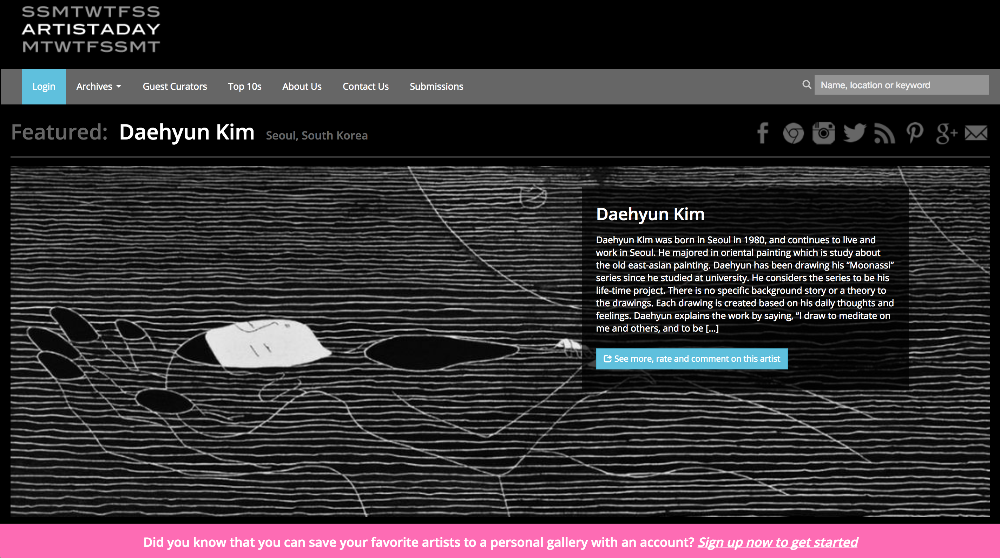
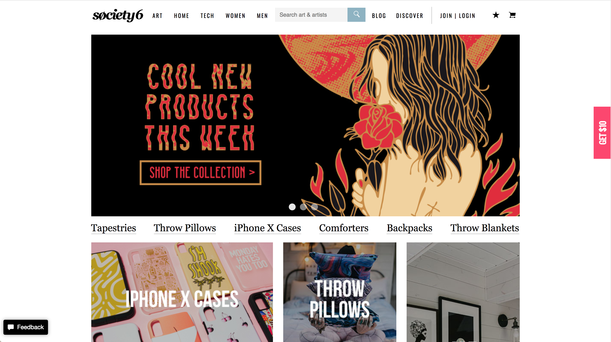

ArtistADay - artistaday.com
ArtistADay (AAD) is a website that features emerging professional artists each day. The mission of this website is to spread awareness and discovery of emerging artists to people who love art. The website showcases a few works per artist, and also provides a link to the artist's website and shops. ArtistADay is also a platform where people can rate, comment, and share artists they have discovered through multiple sharing programs. Based on their statistics, since their launch 10 years ago, there have been 3,258 artists featuered and 1.5+ billion page views.
Critical evaluation: In my opinion, I think that this website is relatively user-friendly, with a clear and organized navigation and also a simple website interface. What I found was useful was the "Archives" tab, which indicates that people can sort their searches depending on top rated, most recent, by type, etc. This is very useful in streamlining user focus. I also enjoyed how the first thing that you see when you enter their website is a large banner of the featured artist of the day. It immediately gives the viewer a clear idea of what the website is about. In terms of the website theme/design, I think that there could be improvement. I personally don't like the dark black background, as it appears uninviting and slightly decreases readability. Another is the grid-like timeline of artist's works. I felt a little overwhelmed at first; to avoid that, I think that using a "show 25 per page" option would be useful and less overwhelming.
Society6
Society6 is an online shop and art gallery for independent artists. The purpose of the website is to provide a platform for artists to not only share their artwork (like on a portfolio) but also sell products with their art on it. The unique aspect of Society6 is that anyone can apply to be a seller on their website. This platform makes it easy for the public to discover new artists and buy unique items, and provides artists with a means of making money and growing their presence online.
Critical evaluation: I personally enjoy the overall design of the website. It is very minimalistic (with the white theme) and everything is well organized and user-friendly. A feature that I think is useful is that they create separate categories featuring actual artists rather than just products. For example, under the "Women" tab, there are categories for "Popular Artists" and "New Artists". The link takes viewers to their shop, where they can see the description of the artist and the products they sell. Another unique feature is the "Discover" tab, which is essentially a gallery of all the artists that they support on the website. This is a very good way of allowing people to discover emerging artists that would not necessarily have gotten recognition through other means.